Recalls are a highly practical and convenient feature in Meddbase which allows for streamline booking, tracking, and reporting of follow-up appointments. Recalls allow you to automatically send reminders out to your patients via e-mail or SMS to ask them to contact you to book an appointment.
Recalls can be tracked and interacted with through the Recall Reminder work item.
If you are not familiar with the general function of work items feel free to read through the two articles linked directly below:
The purpose of this article is to provide an overview of what recalls are, how they work, and what happens once they reach the end of their life cycle. Engaging with this article will provide you with all information surrounding the Recall work item.
This article is split into the following sections:
Overview
A ‘Recall’ is a work item within Meddbase which allows for quick and convenient scheduling of a follow up appointment.
Recalls allow you to automatically send reminders out to your patients via e-mail or SMS to ask them to contact you to book an appointment. They are based on the appointments and services you already have set up in your chamber.
When a recall is made, members of the Recall Reminder Administrator role group will receive a Recall Reminder task a specified length of time before the recall is due. This reminder can be found along with the other work tasks on the Start Page, as seen below:
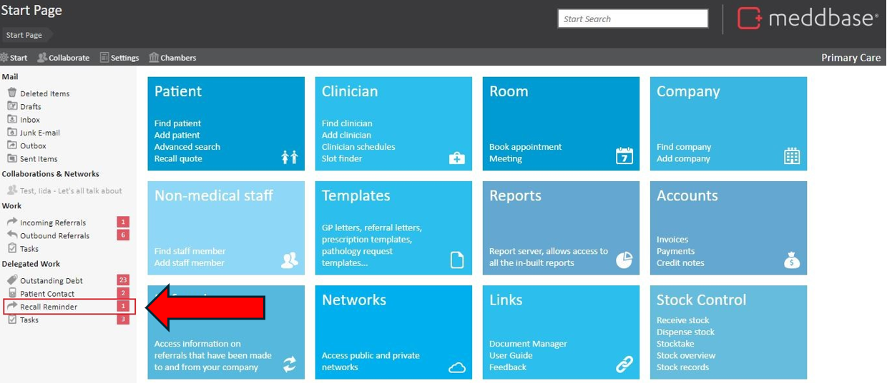
There are two ways in which recalls can be generated within Meddbase - Manually and Automatically.
The Reminder timer for a recall will trigger when the associated appointment is 'Arrived'
Should you need to see a patient again within a set period of time, it is possible to prepare a patient recall within Meddbase either by the recall section of the 1.) Patient Record page or through a 2.) Consultation where the recall button appears on the top task bar. Click on either of these buttons and you will be presented with the patient recall dialogue box.
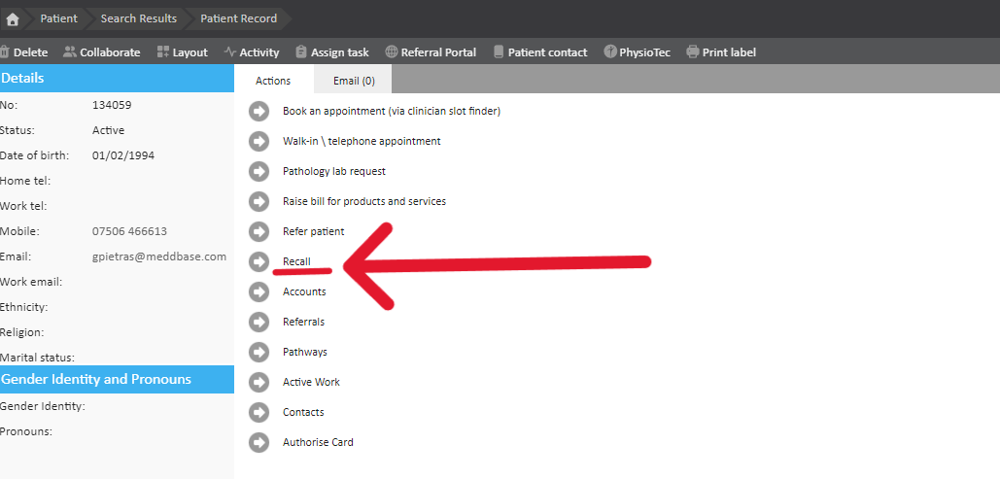
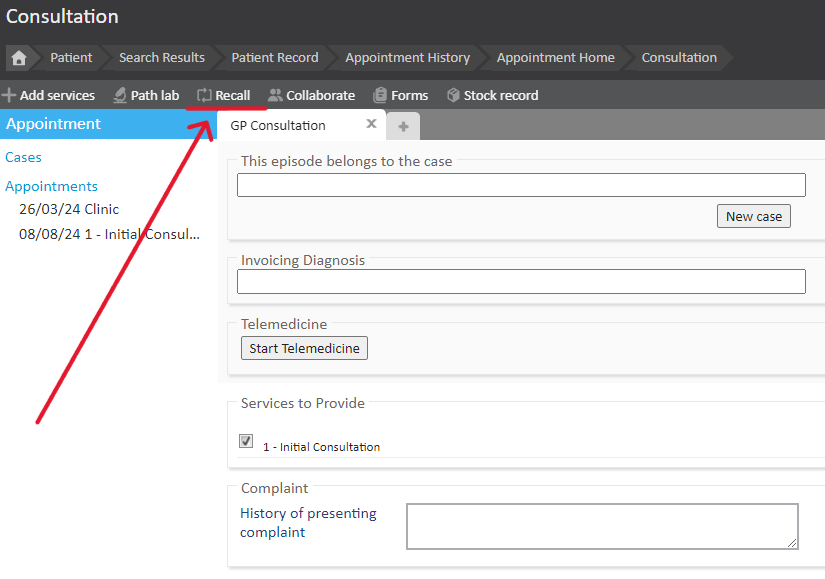
Once the recall option is selected there are four fields to fill in here:
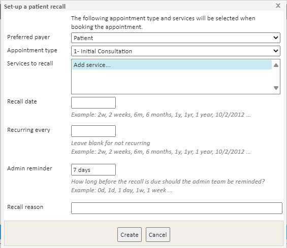
Recalls can also be set to automatically send, this can be done via 3.) Appointment Type; or from a 4.) Service Type or be entirely custom automated via a 5.) Pathway.
To set up an automatic recall against an appointment, go to Start Page> Admin > Appointment Admin, select the appointment and click Edit.
Click on the Recall tab located to the right of the Edit Appointment Type window and define:
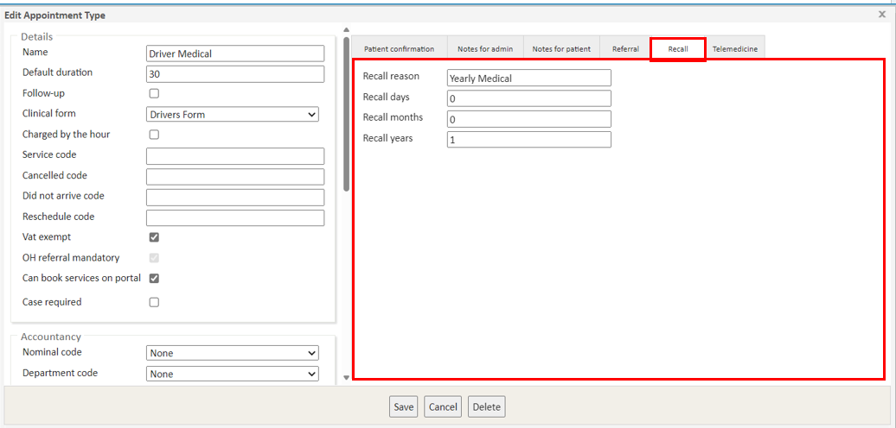
To set up an automatic recall against a service, go to Start Page> Admin > Service Management and select the service you wish to add the Recall to.
Fill in the relevant reason, which should be a description of what is being requested ie. 'Booster Hepatitis vaccination is now due'. You can then set the recall to go out in days, months and years. Meddbase will send the recall X number of days after the service has been consumed within an appointment.
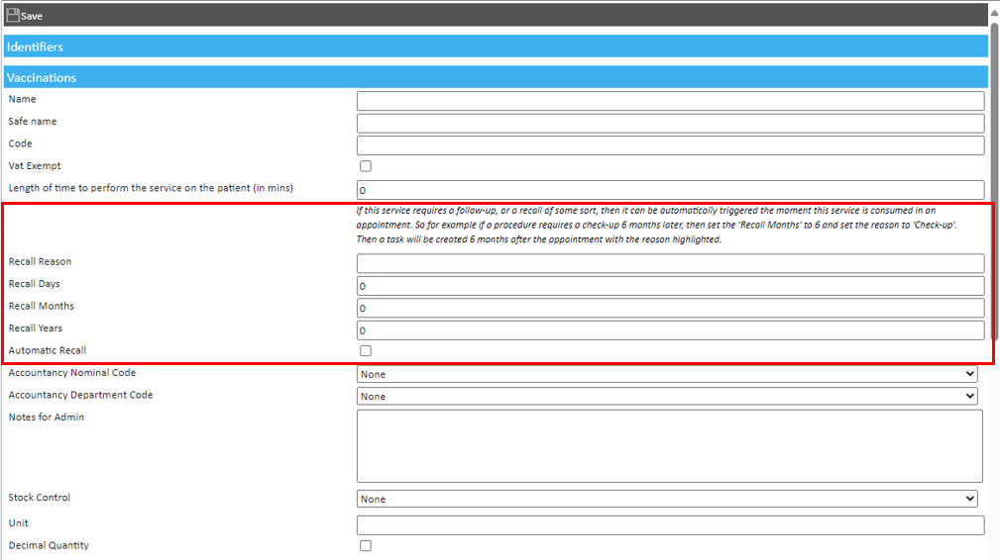
Recalls can also be generated from Pathways. Pathways are custom workflows within Meddbase that can be set to perform automated tasks. For more information on Pathways, see Understanding Pathways.
Recall Reminders
When a recall is initially created, there will be no work item associated with it. The work item will only be created for that recall on the reminder date that was set whilst creating it. Once this date is reached a reminder is made and will be added as a work item in the Recall work type inbox.
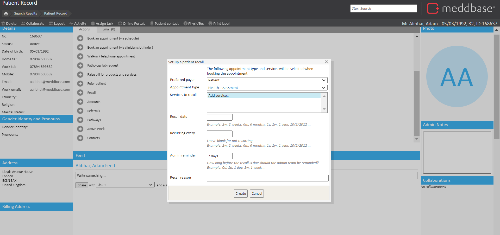
Chamber Wide Reminders
There are two separate reminders that can be configured to send out, one to Admins and the other to Patients. The Admin reminder will go to the internal admin team of the clinic and the Patient reminder will be sent externally to the patient. Only an email option exists for internal Admin whilst email and SMS options exist for Patients. This can be enabled or disabled for either party by interacting with the tick-box.
This can be set up in Admin > Configuration > Task Checker. Within the Task Checker page there is a section called Recall Reminder.
Default reminder time is referring to the number of days prior to the recall appointment that the reminder will be sent to the Admins and Patient. The Time option will control the exact time that this message will send on that day.
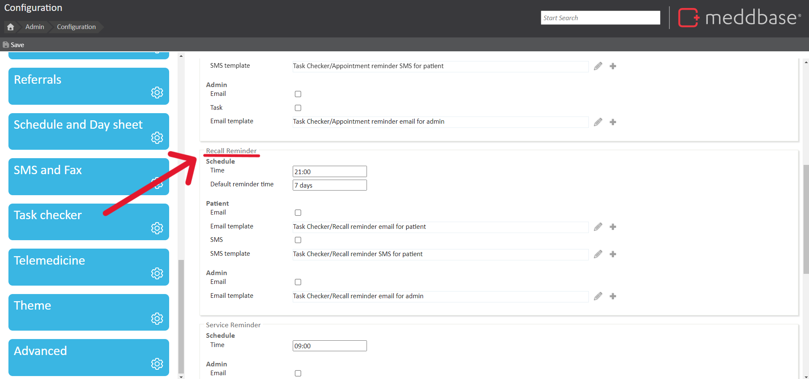
Upon opening a recall task there will then be several Recall Actions available to the user. These options are listed below:
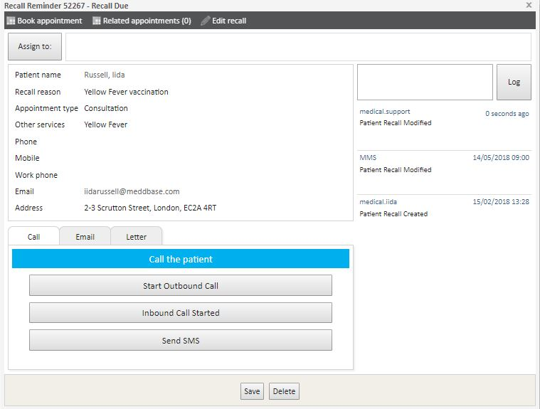
Once a recall reminder task is created, there is a 60-day window of time in which actions can be made from them. If no action is taken after 60-days, the recall reminder work item will be automatically archived. See below:
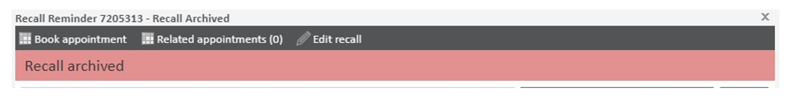
Upon gaining archived status it will no longer be possible to initiate actions from that recall nor can it be deleted from archived status. Only System Administrators will be capable of editing the archived recalls. Editing recalls refers to being able to change non-consequential information within them. No actions can be made from archived recalls.
It is possible to manually archive recalls, this can be done by setting a specific date cut-off range or selecting one of the provided options (one week or older/one month or older). You can find this manual archive button at the bottom right corner of the recall tasks page (from the Start page).
See below:
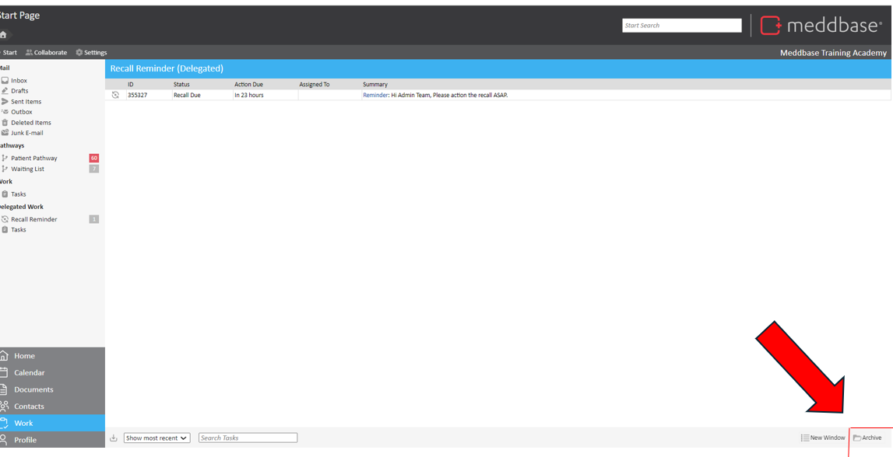
Currently there is no way of removing or editing the 60-day archive feature.